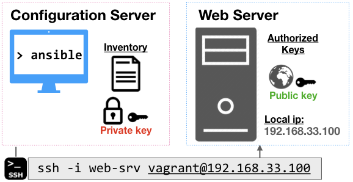

In this workshop, we'll cover the basics of setting up a simple configuration server, enabling ssh access, and using ansible to configure a simple web server.

opunit profile CSC-DevOps/profile:519.ymlgit clone https://github.com/CSC-DevOps/CM cd CM.To check the configuration of the configuration and web server, we will use opunit to run checks on the virtual machines listed in the inventory file. We can run checks from the top-level directory as follows:
$ opunit verify -i opunit_inventory.ymlIf you're using vagrant VMs, you'll have to use -i vagrant_inventory.yml, instead.
Let's create a configuration server. This server will be using a "push-based model", where we will be sending configuration commands to other external servers. It also needs to be configured with ansible.
Check virtualization.
$ VBoxManage list vmsCreate the Virtual Machine.
✓ $ cd servers/ansible-srv
$ cat baker.yml
$ baker bakeYou should see baker create the virtual machine.
✓ ✔ Running apt-get update on VM
✔ Preparing ansible
✔ Installing ansibleIn a new terminal, or changing back to root directory: cd ../..: Verify that ansible was installed by running opunit:
✓ opunit verify servers/ansible-srv -c test/ansible-srv.yml Let's create another virtual machine for the web server.
✓ $ cd servers/web-srv
$ cat baker.yml
$ baker bakeYou should see baker create the virtual machine. Verify baker ssh works, then exit back to your host machine.
You need a way to automatically connect to your server without having to manually authenicate each connection. We will create a pair of public/private keys for authentication through ssh.
From your host machine, create a new public/private key pair, running the following command, and hitting enter for the default prompts:
✓ ssh-keygen -t rsa -b 4096 -C "web-srv" -f web-srv -N ""
After generating the keys, you need to copy them onto the servers. The private key (secret, tell know one 🤐), needs to be sent over to the configuration server. The public key (🌐), needs to be sent over to the web-server.
One nice trick is to use a copy utility to copy a file into your copy/paste buffer:
pbcopy < web-srvclip < web-srvLet's go to the ansible-srv (cd servers/ansible-srv, then baker ssh).
Using a file editor, paste and store your private key in a file:
ansible-srv $ vim ~/.ssh/web-srv
# Make sure key is not readable by others.
ansible-srv $ chmod 600 ~/.ssh/web-srv
# We're done here, go back to host
ansible-srv $ exitOr use a simple command:
✓ $ cat web-srv | ssh -i ~/Library/Baker/BakerForMac/baker_rsa -o StrictHostKeyChecking=no vagrant@192.168.33.10 "cat > ~/.ssh/web-srv && chmod 600 ~/.ssh/web-srv"Copy the web-srv.pub file from your host.
Go inside the web-srv.
Using a file editor, add the public key to the list of authorized keys:
web-srv $ vim ~/.ssh/authorized_keys`
web-srv $ exitTake care not to delete other entries, which may affect your ability to use vagrant/Baker to ssh into the machine. You also do not need to change the permissions of the file.
You may consider running this simple command to update the public key entry:
✓ $ cat web-srv.pub | ssh -i ~/Library/Baker/BakerForMac/baker_rsa -o StrictHostKeyChecking=no vagrant@192.168.33.100 "cat >> ~/.ssh/authorized_keys"Inside the ansible-srv, test your connection between the servers:
ssh -i ~/.ssh/web-srv vagrant@192.168.33.100Note: You should also be able to make this same connection from your host machine, since you also have private key, locally.
If you see an error or prompt for a password, you have a problem with your key setup. Double check have pasted in the content in correctly (where you in insert mode in vim before pasting?).
If you see this warning, you need to remember to perform the chmod 600 in order to fix the permissions of the private key file:
@@@@@@@@@@@@@@@@@@@@@@@@@@@@@@@@@@@@@@@@@@@@@@@@@@@@@@@@@@@
@ WARNING: UNPROTECTED PRIVATE KEY FILE! @
@@@@@@@@@@@@@@@@@@@@@@@@@@@@@@@@@@@@@@@@@@@@@@@@@@@@@@@@@@@
Permissions 0664 for '/home/vagrant/.ssh/web-srv' are too open.Once you have established a ssh connection between two servers, you have achieved an important milestone in configuration management.
You can now perform ad-hoc commands and even execute scripts on machines without having to manually log-in.
For example, when you run this command.
✓ ssh -i ~/.ssh/web-srv -o StrictHostKeyChecking=no -o UserKnownHostsFile=/dev/null vagrant@192.168.33.100 ls /You can see the directory of the web-srv.
Practice: From your ansible-srv, create a file by executing the command below on the remote server. Verify it exists.
✓ touch ssh_test.txtBy this point, you should be able to pass the ssh setup checks in opunit: opunit verify -i opunit_inventory.yml.
While being able to run ad-hoc commands and scripts provides a useful capability, there are several constraints that make this impractical.
Writing bash scripts can be error-prone. Most commands are not idempotent, meaning they may cause errors or unexpected behaviors if run multiple times on the same servers. Finally, configuration of servers is an inherently noisy problem, due to network issues and random service and hardware failures. This means, you often need to resume a configuration operation after experiencing partial failure.
Ansible is a tool for performing configuration changes on multiple machines. Ansible uses a push-based model for configuration management, performing idempotent commands over ssh, without requiring any agent running. The implementation is rather straightforward: Ansible commands are translated into python snippets, and then copied over to the target machine, and executed. This requires that python is installed on the target machine.
An inventory file allows ansible to define, group, and coordinate configuration management of multiple machines. At the most basic level, it basically lists the names of an asset and details about how to connect to it.
Inside the ansible-srv, edit the inventory file to include the ip address, user, and path to the private key:
✓ [web]
192.168.33.100 ansible_ssh_user=vagrant ansible_ssh_private_key_file=~/.ssh/web-srv
[web:vars]
ansible_ssh_common_args='-o StrictHostKeyChecking=no'Now, run the ping test to verify ansible is able to talk to the web-srv!
✓ ansible all -m ping -i inventoryNote: this will fail because python is not available on the target machine. However, python3 is! We can adjust the connection to account for this. Inside the inventory, we can add a new variable for all entries in our web group:
[web:vars]
ansible_python_interpreter=/usr/bin/python3Now, we should see a successful connection!
✓ 192.168.33.100 | SUCCESS => {
"changed": false,
"ping": "pong"
}We can test our ability to use ansible for a simple configuration management task.
Let's install a web server, called nginx (say like engine-X), on the web-srv VM. The web server will automatically start as a service.
✓ ansible all -b -m apt -i inventory -a 'pkg=nginx state=installed update_cache=true'Open a browser and enter in your node's ip address, e.g. http://192.168.33.100
You should be able to verify all checks pass:
opunit verify -i opunit_inventory.ymlGreat work!
Can you provision a remote VM (from digitalocean/etc.) and then add its details to the inventory? Can you run your nginx command on it too?
Run ansible commands can be useful for exploration and debugging. However, we want to be able to organize these commands into reusable configuration scripts.
Next workshop, we will learn about creating and running ansible playbooks.